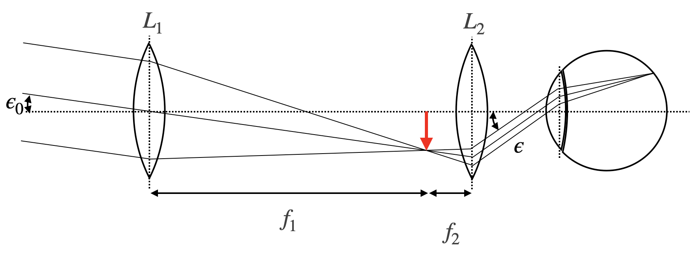
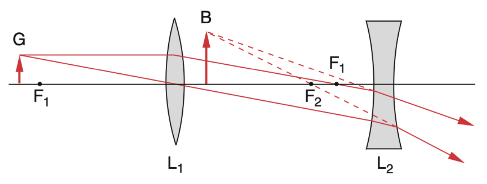
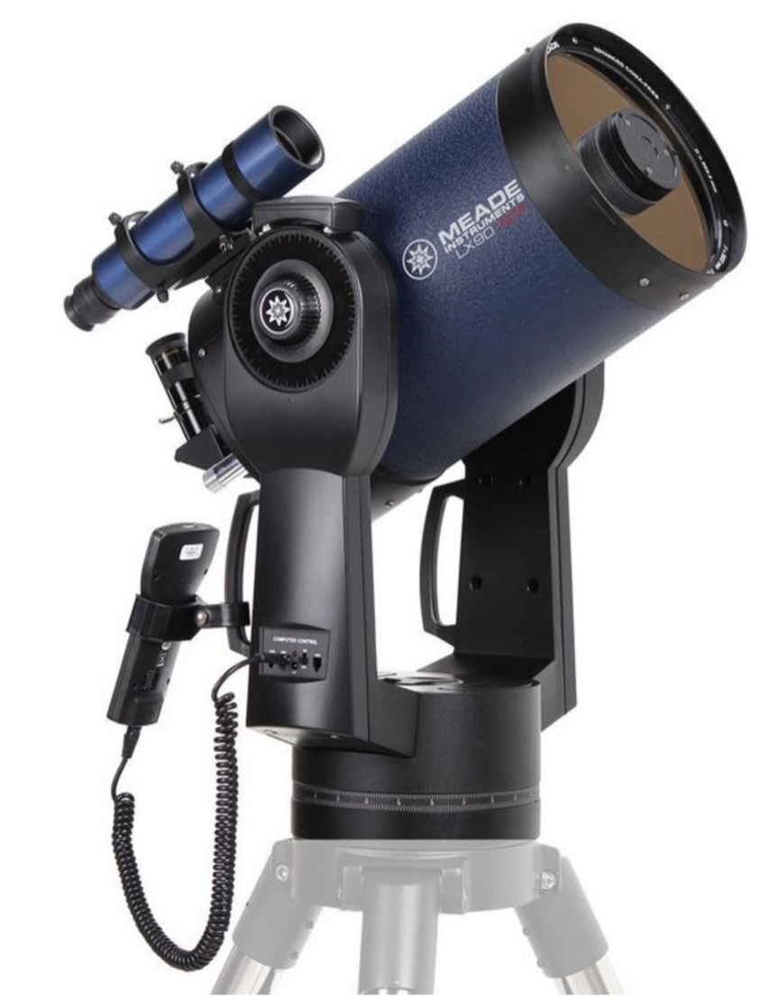
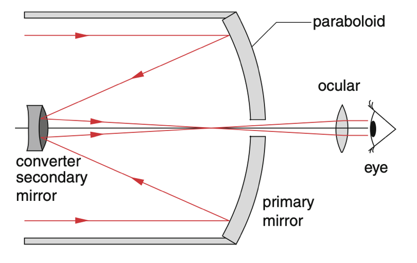
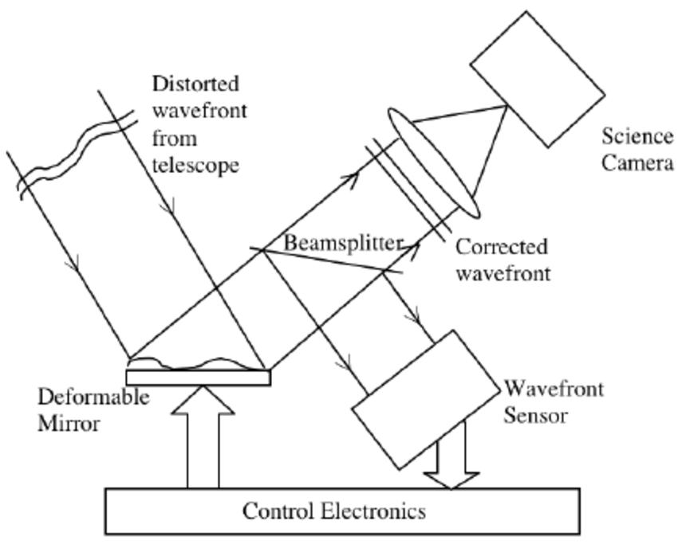
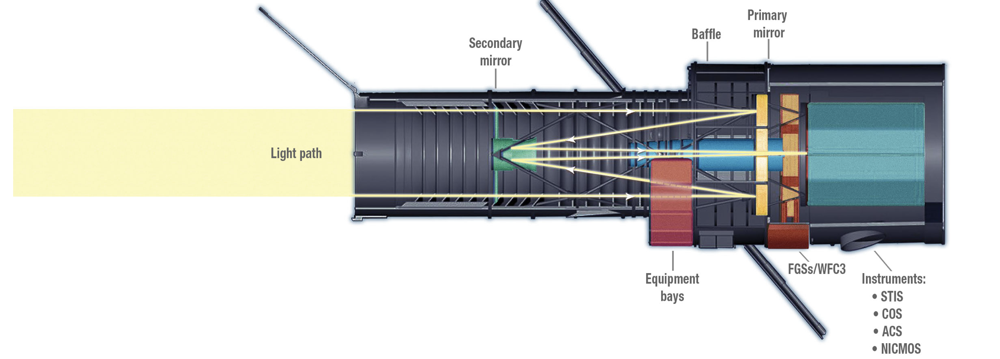

Telescopes
Other than the microscope, the telescope is made to observe distant objects, which would appear under a very small observation angle. This can be achieved with different optical designs. The most common telescopes are refracting telescopes, which use lenses to magnify the angle under which the object is observed. The second type of telescopes are reflecting telescopes, which use mirrors to magnify the angle under which the object is observed.
Refracting Telescopes
The telescope is therefore made to magnify the angle under which the object is observed. In the same way as a microscope, the telescope consists of two lenses with the focal distances \(f_1,f_2\).

As indicated in the sketch above, the first lens generates an image at the focal length of the first lens. This intermediate image is the magnified by an eye-piece as well acting as a magnifying glass. We may therefore apply the same kind of techniques as earlier for the calculation of the angular magnification. The angle of observation for the object of size \(D\) is given by
\[ 2\epsilon_0=\frac{D}{f_1} \]
while the angle of observation through the telescope is given as
\[ 2\epsilon=\frac{D}{f_2} \]
Correspondingly, the angular magnification is given by
\[ V=\frac{\epsilon}{\epsilon_0}=\frac{D}{f_2}\frac{f_1}{D}=\frac{f_1}{f_2} \]
The magnification is therefore given by the ration of the focal length of the entrance lens and the eye-piece. The above telescope is also termed astronomical telescope or Kepler telescope, since it has been used for astromical observations. It creates an image which is reversed.
A telescope with an upright image may be created with the help of a concave lens. This type of telescope is called Galilei telescope and obeyes the same magnification formula as above. Due to the fact that a concave lens has a negative focal length, the total magnification will be negative as well being indicative for an upright image.

Reflecting Telescopes
Modern powerful telescopes also use mirrors instead of refracting optical elements, as reflecting elements with nearly 100 percent reflectivity can be built with a much smaller mass than large glass elements. Such telescopes come in different setups. The one below is a Cassegrain telescope, where a secondary convex miror is used for imaging the intermediate image to the eye.


Adaptive Optics
When observing objects from the ground, the atmosphere can distort the image. This is due to the fact that the atmosphere is not homogeneous and the refractive index of the air is changing with time. This leads to a distortion of the image, which can be corrected with the help of adaptive optics. The principle of adaptive optics is to measure the distortion of the image with the help of a laser beam and to correct the image with the help of a deformable mirror. The deformable mirror is a mirror with a number of actuators, which can change the shape of the mirror in order to correct the distortion of the image. The principle of adaptive optics is shown in the figure below.

Space-Based Telescopes
Placing telescopes in space eliminates atmospheric interference completely. The Hubble Space Telescope revolutionized astronomy with its crystal-clear views of the universe.

Its successor, the James Webb Space Telescope (launched in 2021), operates in the infrared spectrum and can peer even further into space and time. Being above the atmosphere not only provides clearer images but also allows these telescopes to observe wavelengths that are normally blocked by Earth’s atmosphere, particularly in the infrared and ultraviolet regions.